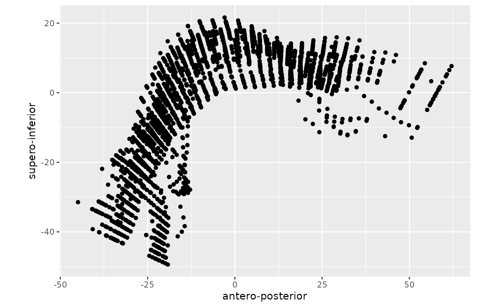

It plots tongue contours from data imported from AAA.
plot_tongue(data, geom = "line", ..., palate = NULL, palate_col = "green")
| data | A data frame with splines data. |
|---|---|
| geom | Type of geom to plot. Possible values are: |
| ... | List of arguments to be passed to |
| palate | An optional data frame with the palate spline. If provided, the palate is plotted. |
| palate_col | The colour of the palate spline (the default is |
An object of class ggplot.
plot_tongue(tongue, geom = "point")#> Warning: Removed 607 rows containing missing values (geom_point).